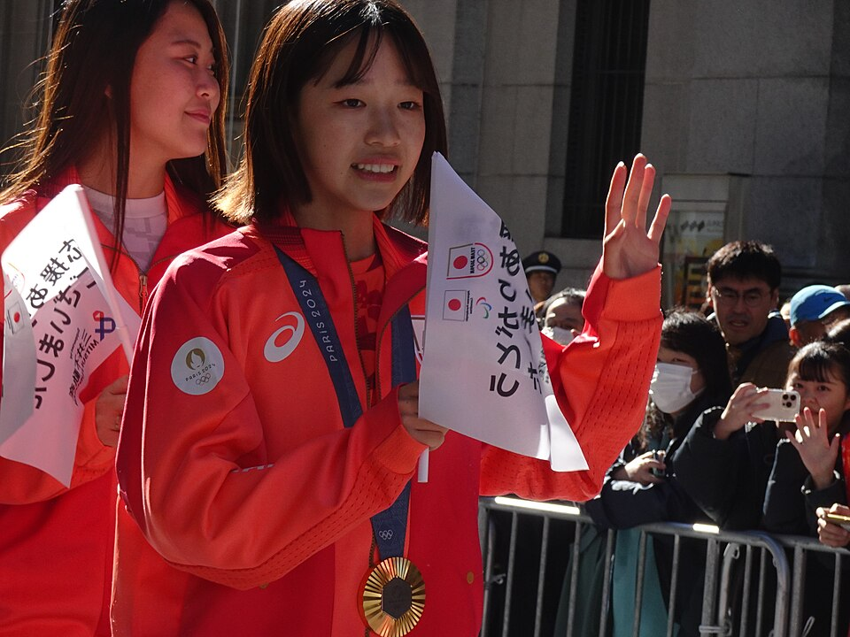

アーバンスポーツ
•
スケートボード / 女子ストリート
よしざわ ここ
吉沢 恋
Coco Yoshizawa
🏢 所属: ACT SB STORE
🏅 パリ五輪金メダル（14歳での快挙）🏅 ビッグスピンフリップフロントサイドボードスライド
14歳で世界を制したストリートの新世代ヒロイン！度胸満点のビッグトリックで魅せる
愛知・名古屋2026 今大会最終結果
金メダル 🥇
得点: 89.90点
パリ五輪金メダリストの若き天才が地元日本でも躍動。ビッグレールでの高難度スピンフリップを完璧に決め、終始トップを守り抜いて金メダルを獲得。
🎬 最後のシーン（決定的瞬間・ハイライト）
最終トリックをノーミスで決めてウイニングラン。ライバルたちと笑顔で抱き合い喜びを分かち合ったシーン。
▶️ 【YouTube】笑顔で駆け抜けた最終トリックと仲間とのハイタッチ を見る
📊 公式トーナメント表・競技記録速報（Draw/Results）
女子ストリート 予選・決勝トリック別公式スコアシート
📊 【World Skate / ワールドスケートジャパン】World Skate 公式リザルト を見る ➔
経歴・これまでの歩み
小学1年生でスケートボードを始め、地元の公園で家族とともに練習を重ねる。SNSを使わずマイペースに技を磨き、東京五輪の中継で見た技を自分もすでにできていたことから世界を目指す。予選シリーズで急成長し、2024年パリ五輪で圧巻のビッグスピンフリップフロントサイドボードスライドを決めて金メダルを獲得した。
主要大会ハイライト戦績
2024年
パリオリンピック
女子ストリート 金メダル（14歳）
2024年
OQSブダペスト
優勝（五輪切符獲得）
プレイスタイル＆世界を制する武器
男子顔負けの大きなセクション（階段や手すり）への恐怖心を感じさせないアタック。ボードを空中で回転させながらレールに乗る複合トリックの完成度がずば抜けています。
専門家・メディアによる客観的分析・批評
✨
強み・世界トップ水準の評価
14歳で五輪頂点に立った度胸と、男子顔負けのビッグレールでの複合トリック（ビッグスピンフリップフロントサイドボードスライド）の驚異的成功率。
出典・ソース:
World Skate公式 / 日本ローラースポーツ連盟
⚠️
課題・懸念される客観的事実
急激な成長期に伴う身長・体格の変化による重心バランスの再調整と、世界の若手ライバルたちの急激な追い上げに対するプレッシャー。
出典・ソース:
読売新聞スポーツ部
愛知・名古屋2026への決意とメッセージ
大会スケジュール＆観戦のツボ
🗓️ 出場予定日程・会場
2026年9月20日 予選 / 9月21日 決勝
👀 観戦の注目ポイント
小柄な体から繰り出される豪快なレールトリックと、成功させた後のとびきりの笑顔。